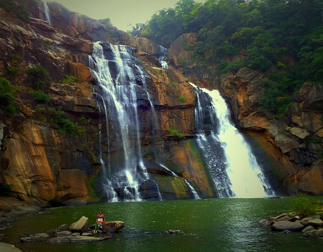
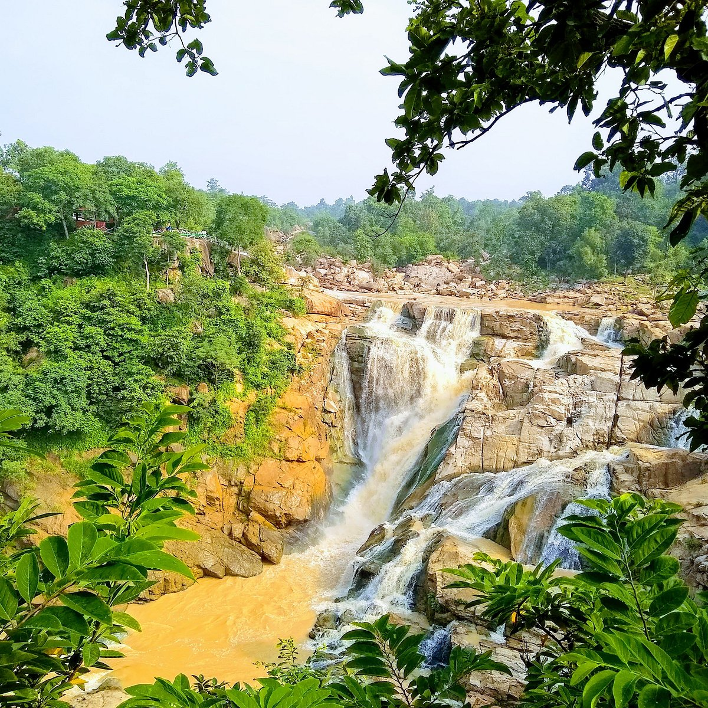
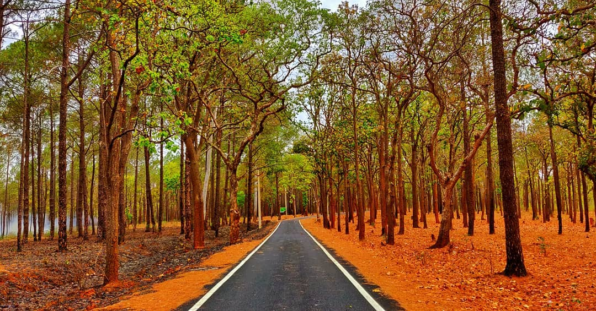

Tourism in Jharkhand

Hundru Falls
Hundru Falls is one of the highest waterfalls in Jharkhand, where the Subarnarekha River drops from a height of 98 meters. Surrounded by lush greenery and rock formations, it’s a must-visit spot for nature lovers and photographers.

Betla National Park
Betla National Park is India’s first tiger reserve and home to elephants, tigers, leopards, and numerous bird species. Historic Palamu forts inside the park make it both a wildlife and heritage destination.

Dassam Falls
Dassam Falls is a 44-meter high waterfall formed by the Kanchi River. Its cascading waters and peaceful surroundings attract tourists seeking relaxation and adventure near Ranchi.

Netarhat
Netarhat, the "Queen of Chotanagpur," is famous for breathtaking sunrise and sunset views. Its pine forests, cool climate, and scenic beauty make it Jharkhand’s favorite hill station.